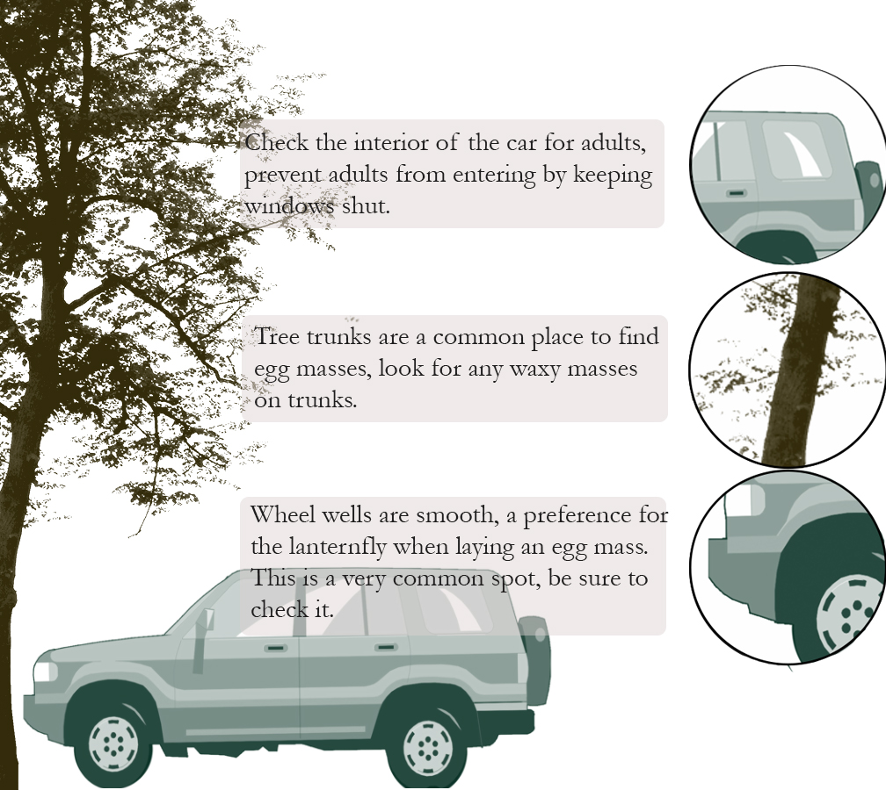
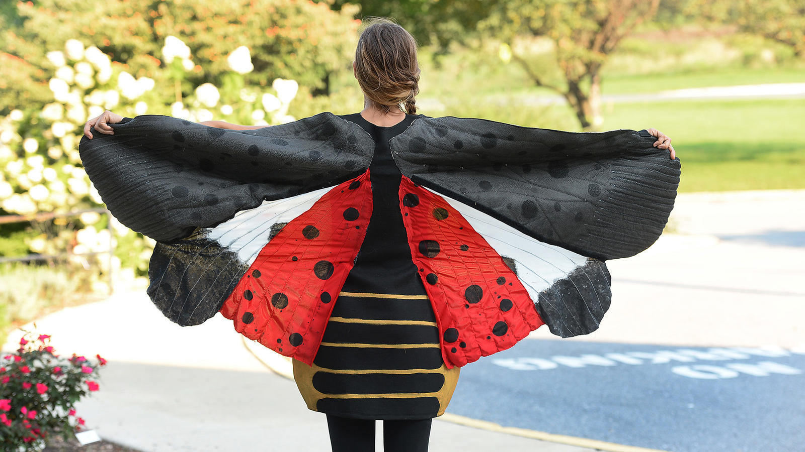

Credit Sam Droege / USGS
PHILADELPHIA- Oddly striking for an insect, the Spotted Lanternfly’s exotic appearance is exactly that: exotic, non-native, and in terms of ecology- incredibly invasive.
The Spotted Lanternfly, native to China, India, and Vietnam, first invaded Berks County in 2014, an invasive species harmful to state agriculture due to its lack of natural predators or hindrances.
The activities of these pests threaten more than $28 million grape, $87 million apple, and more than $19 million peach industries, as well as the hardwood industry in Pennsylvania which accounts for nearly $17 billion in sales, according to the Pennsylvania Department of Agriculture (PDA).
Four years later, the Spotted Lanternfly’s reach has expanded to cover a majority of southeastern Pennsylvania.
Counties involved now include Berks, Bucks, Carbon, Chester, Delaware, Lancaster, Lebanon, Lehigh, Monroe, Montgomery, Northampton, Philadelphia, and Schuylkill. As a result of this spread, the region has been placed in quarantine for the third year in a row in an attempt to reduce their spread further.
Using the “tree of heaven”, Ailanthus altissima, as their preferred habitat, the adult Spotted Lanternfly is known to jump from the tops of trees to other trees. Though a fly by name, their flying capabilities are much less than their jumping, a main natural dispersal method of theirs.
In the fall particularly, they begin to lay their egg masses: a waxy appearing patch on any smooth tree trunk or other smooth surface, such as cars and outdoor furniture. It is on and in cars which the Lanternfly have been known to travel from quarantine areas of Southeastern Pennsylvania to places like Albany, New York, indicating major human assisted dispersal.
The quarantine effort is the primary method of making sure humans do not transport the Spotted Lanternfly outside of their current location. Highlights of the Pennsylvania Department of Agriculture’s (PDA) quarantine effort are outlined as follows:
Its goal is to explicitly prevent further human mediated spread, so there are more efforts to decrease their abundance including outreach and education programs, as well as control efforts involving pesticides and physical removal.
When asked how she felt about how the quarantine has been performing over the past three years it has been in effect, Ruth Welliver of the PDA noted that she has been happy with how fast the spread has slowed.
“It’s just one tool we have in our toolkit, we could have done outreach without a quarantine, but the word ‘quarantine’ packs a punch” said Welliver, later again emphasizing the fact that the quarantine deals exclusively with “human assisted activity.”
As a comparison to Pennsylvania’s situation: beginning in 2004 , the Spotted Lanternfly managed to cover across the entirety of South Korea over the course of 3 to 5 years. With a size slightly smaller than that of Pennsylvania, it is easy to imagine that this could have been the case in Philly’s backyard. Both Dr. Matthew Helmus, professor at Temple University, and Ruth Welliver cited this as a massive reason they see the quarantine as successful thus far. Instead of seeing the entire state taken over by the Spotted Lanternfly, the spread has been greatly contained.
However, Welliver pointed out that people in heavily populated areas sometimes don’t know about them, which she described as “mind boggling”. Unlike the populations of the Spotted Lanternfly, awareness of the issue can be patchy. Helmus is signed up for weekly email alerts containing any news including the term “Spotted Lanternfly” and other similar terms. Every week in the alert he sees two or three articles tagged with the terms, but this consistent coverage does not guarantee that everyone will see it.
Not every citizen is aware of these strange invasive bugs, but comfort comes in the fact that local papers and state agencies in states affected are seeing this coverage and are doing their part in educating as many people as they can so the citizenry may be an even larger part of the effort toward eradication of the pest.
Helmus sees current news coverage as a very good sign for the effort, even if “one of them was about Halloween Costumes last week.”
(RICK KINTZEL / THE MORNING CALL)
Photoshop Brushes by Brusheezy.com